Водонапірні башти УкраїниІлюстрований атлас 1866–2026
40 досьє: дати будівництва й реконструкцій, архітектори, інженери й замовники, конструкції, охоронний статус і фото з відкритими ліцензіями. Розповідь веде водонапірна башта в Малій Вільшанці.
Башта говорить: хто ми, водонапірні башти України
Це дослідження — друга праця серії IMWT після «Історії водонапірних башт світу». Його основа — ілюстрований пошуковий атлас IMWT від 17 листопада 2026 року (37 досьє). У цій редакції кожне досьє звірено з реєстрами, архівними повідомленнями, енциклопедичними та фаховими джерелами; до кожної башти знайдено і вбудовано фото з відкритою ліцензією або чесно позначено «фото в пошуку»; уточнено дати, авторів і замовників; додано три нові об’єкти.
Головне правило: рік спорудження, дата прийняття в експлуатацію, реєстрове датування, дата реконструкції і дата знімка — різні поля. Ім’я інженера конструктивної системи не завжди є ім’ям архітектора конкретної башти, а автор загального водогону не обов’язково проєктував башту.
Як ми перевіряли факти і фото
| Рівень | Що означає | Приклади |
|---|---|---|
| A первинний | Закон, Державний реєстр, державний архів, первинний музейний або муніципальний документ | Переліки Мінкульту, архів Житомирщини, постанова КМУ № 929 |
| B фаховий | Академічна чи фахова публікація, енциклопедія | ЕСУ, ВУЕ, праці КНУБА, «Львівської політехніки», ВНТУ, УжНУ |
| C довідковий | Медіа, краєзнавчий опис, туристичний портал, підпис до фото | Міські портали, Wikimedia Commons, новинні сайти |
Рівень досьє відповідає найкращому джерелу щодо його ключових фактів. Дата чи авторство, підтверджені лише рівнем C, у тексті прямо позначені як такі, що потребують архівної перевірки.
Фотографії
Для кожної башти шукали предметно атрибутовану світлину на Wikimedia Commons: з іменем фотографа, датою зйомки, відкритою ліцензією і, де можливо, з охоронним ідентифікатором пам’ятки. Під кожним фото — автор, рік, ліцензія і посилання на сторінку файлу. Якщо надійного відкритого фото немає, досьє має позначку «ФОТО В ПОШУКУ». Фото з видань без відкритої ліцензії не відтворюємо, а лише згадуємо.
Окуповані території
Три башти Криму (Сімферополь, Євпаторія, Феодосія) і башта в Часовому Яру описано за українськими переліками й довоєнною фотофіксацією. Їхній поточний стан не підтверджено. Публікації установ, що працюють на окупованих територіях під контролем держави-агресора, як джерела не використовуємо.
Що доповнено й виправлено порівняно з атласом 17.11.2026
| Що | Зміна |
|---|---|
| Фото | Вбудовано 37 фото з відкритими ліцензіями (у PDF атласу фото не було — лише QR-коди). Знайдено фото для башт, які атлас вважав без фото: Шостка, Запоріжжя (Барикадна), Умань, Велика Бакта, Сімферополь, ВДНГ, Голосіїв, Кульпарків, Часів Яр, Пісківка (станційна). |
| Київ, Музей води | Уточнено дати: відкриття водогону 1 березня 1872 року; збережена башта — 1875–1876; старша — 1871–1872, розібрана 1939–1940, відтворена 2003; музей відкрито 24 травня 2003 року. |
| Миколаїв | Додано етапи: липень 1904 — рішення громади; 1906 — фундамент і свердловини; січень 1907 — монтаж; 15 березня 1907 — підключення до мережі; висота ≈32 м; бак Інтце. |
| Вінниця | Уточнено адресу (вул. Грушевського, 11, Європейська площа); вежа працювала як водонапірна до 1920 року; будівництво тривало ≈11 місяців. |
| Глухів | Додано: башта стоїть на місці Путивльської брами Глухівської фортеці; 186 сходинок до оглядового майданчика. |
| Черкаси | Додано: під час відбудови 1949 року частину заклепкових з’єднань замінили зварними. |
| Умань | Встановлено адресу: вул. Європейська, 29. |
| Феодосія | Вилучено посилання на публікацію окупаційної установи; датування 1898 спирається на український перелік. |
| Нові об’єкти | Кременчук: башта № 1 (просп. Свободи) і башта № 2 (вокзал); Ізмаїл: вежа на пл. Миру, знесена 2024 року (за підписом Commons). |
| Структура | Досьє впорядковано за епохами (сім частин) замість переліку; додано голос башти, хронологію та покажчик. |
Дати, що формують історію українських башт
Рядки впорядковано за найранішою датою. Дата не завжди означає завершення будівництва — дивіться досьє.
| Дата | Башта | Місце | Фото |
|---|---|---|---|
| 1866–1898 | Водогінна вежа садиби Качанівка | Чернігівська обл., Качанівка | ✓ |
| 1871–1872; демонтаж 1939–1940; відтворення 2003 | Водонапірна вежа Музею води (відтворена) | Київ, Хрещатий парк | ✓ |
| 1874 / відбудова 1946 | Водогінна башта на Барикадній | Запоріжжя, Барикадна / Тополіна | ✓ |
| 1875–1876; реконструкція 2003 | Водонапірна вежа Музею води (збережена) | Київ, Хрещатий парк | ✓ |
| 1879 | Водонапірна вежа біля Лаври | Київ, вул. Івана Мазепи, 23 | ✓ |
| 1889 | Цегляна башта станції Чорнорудка | Житомирська обл., Нова Чорнорудка | ✓ |
| 1891 | Башта станції Поташ | Черкаська обл., Поташ | ✓ |
| 1893–1894 | Вежа Стрийського парку | Львів, Стрийський парк | ✓ |
| 1895–1898 / реєстр 1898–1899 | Водонапірна вежа Житомира | Житомир, вул. Віктора Косенка, 24 | ✓ |
| 1895 у реєстрі / 1904 у міському переліку | Башта Другої Катерининської залізниці | Запоріжжя, вул. Іванова, 2Б | ✓ |
| 1898 | Вежа «Білий басейн» | АР Крим, Феодосія, вул. Руська, 77-а | ✓ |
| 1905 / перебудова 1930-х | Вежа Кульпарківської лікарні | Львів, Кульпарків | ✓ |
| 1905 | Башта станції Кролевець | Кролевець, Сумська обл. | ✓ |
| початок XX ст. | Залізнична башта Пісківки | Київська обл., Пісківка | ✓ |
| початок XX ст. | Башта станції Великий Бурлук | Харківська обл., Великий Бурлук | ✓ |
| початок XX ст. | Водонапірна башта Умані | Умань, вул. Європейська (колишня Леніна), 29 | ✓ |
| початок XX ст. | Водогінна вежа садиби Терещенків | Київська обл., Шпитьки | ✓ |
| початок XX ст. | Водонапірна башта Євпаторії | АР Крим, Євпаторія, вул. Київська, 43 | ✓ |
| 1906–1907 | Шуховська башта Миколаєва | Миколаїв, вул. Рюміна, 9 | ✓ |
| 1909 | Водонапірна башта Сімферополя | АР Крим, Сімферополь, вул. О. Невського, 27 | ✓ |
| 1910-ті / близько 1929 | Гіперболоїдна башта Шостки | Шостка, Сумська обл. | ✓ |
| 1911–1912 | Вежа Артинова | Вінниця, вул. Грушевського, 11 (Європейська площа) | ✓ |
| 1913–1914 | Гіперболоїдна вежа Черкас | Черкаси, вул. Гетьмана Сагайдачного, 12 | ✓ |
| перша половина XX ст. | Гіперболоїдна башта Пісківки | Київська обл., Пісківка | ✓ |
| 1927–1928 | Шуховська вежа Часового Яру | Донецька обл., Часів Яр | ✓ |
| 1927–1928 | Башта водогону Глухова | Глухів, Сумська обл. | ✓ |
| 1928–1929 | Шуховська вежа Конотопа | Конотоп, Сумська обл. | ✓ |
| 1929 | Шуховська вежа Білої Церкви | Біла Церква, Київська обл. | ✓ |
| 1932–1934 | Шуховська вежа Помічної | Помічна, Кіровоградська обл. | ✓ |
| 1932–1933 | Вежа Нового Львова | Львів, вул. Тернопільська, 24А | ✓ |
| 1932–1933 | Вежа Майорівки | Львів, вул. Пасічна, 67 | у пошуку |
| 1936 | Водонапірна башта Великої Бакти | Закарпатська обл., Велика Бакта | ✓ |
| 1949 | Водонапірна башта Пісків-Радьківських | Харківська обл., Піски-Радьківські | у пошуку |
| XX ст. | Водонапірна башта Ковеля | Ковель, Волинська обл., вул. Ветеранів | ✓ |
| 1950-ті; реєстр 1958 | Водонапірна вежа ВДНГ | Київ, просп. Академіка Глушкова, 1 (Національний експоцентр) | ✓ |
| 1955 | Вежа Голосіївської академії | Київ, Горіхуватський шлях, 11-А (НУБіП України) | ✓ |
| XX ст.; знесена 2024 | Водогінна вежа на площі Миру, Ізмаїл (втрачена) | Ізмаїл, Одеська обл., пл. Миру | ✓ |
| дата в архівному пошуку | Водонапірна башта № 1, Кременчук | Кременчук, Полтавська обл., просп. Свободи | ✓ |
| дата в архівному пошуку | Водонапірна башта № 2 біля вокзалу, Кременчук | Кременчук, територія залізничного вокзалу | ✓ |
| рік спорудження не встановлений | Водонапірна башта Малої Вільшанки | Київська обл., Мала Вільшанка | у пошуку |
Ранні міські, садибні й залізничні башти
Від садибної модернізації Качанівки (1866–1898) і першого київського водогону (1872) до залізничних башт 1880–1890-х років. Вода потребує вертикалі, але місто надає цій вертикалі мову неоготики, ренесансу або замкового образу; резервуар часто приховано в архітектурному тілі.
Водогінна вежа садиби Качанівка
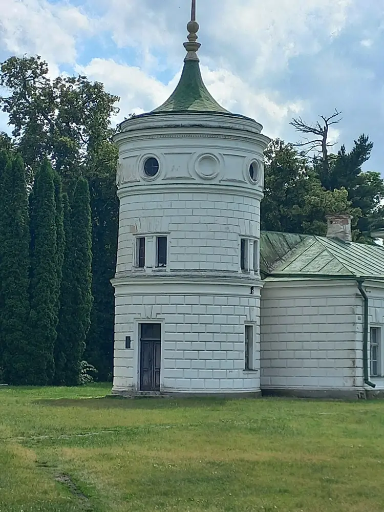
Історія
Вежу звели протягом будівельного етапу 1866–1897/1898 років. Під час Другої світової війни вона зазнала пошкоджень, у 1947 році відбудована. Національний ансамбль Качанівки фіксує вежу як окремий компонент. За ансамблем Качанівки вежа є складовою національної пам’ятки, затвердженої постановою КМУ від 10.10.2012 № 929. [1, 2]
Архітектура й конструкція
Близько 20 м; цегляний круглий стовбур, три яруси, наметове завершення. Потрібно встановити початковий тип резервуара, трасу трубопроводів і частку автентичної кладки після 1947 року.
Дослідницька програма
Визначити точний рік за архівом Тарновських; зіставити проєкти 1866–1897 років, фотодокументи та реставраційні матеріали. Філософія об’єкта — прихована інфраструктура аристократичного ландшафту.
Водонапірна вежа Музею води (збережена)
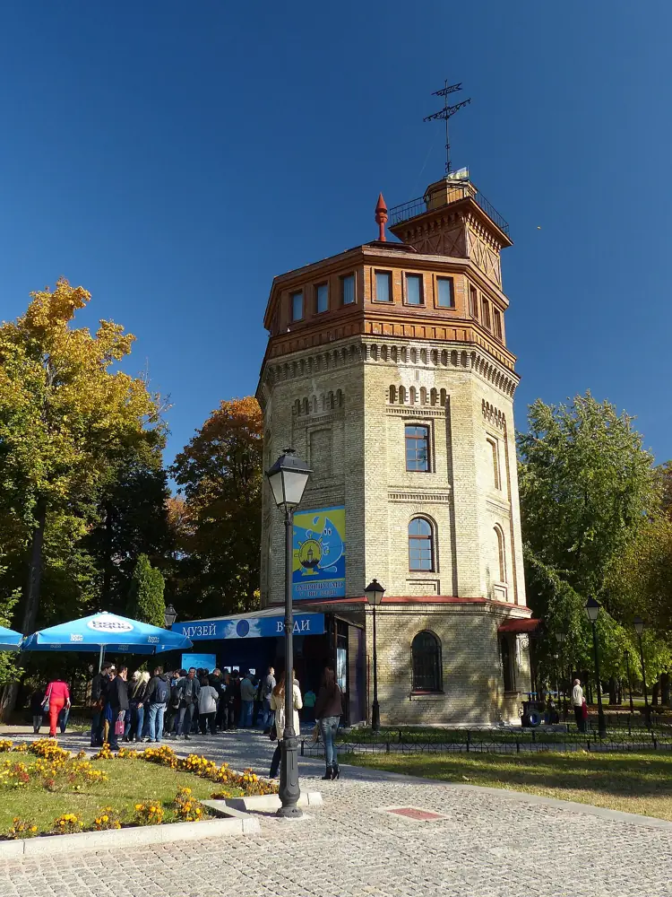
Історія
Перша черга київського централізованого водогону була урочисто відкрита 1 березня 1872 року саме тут, у колишньому Царському саду. Башту з центральним входом (≈29 м) зведено у 1875–1876 роках. 2003 року її реконструйовано за первісними кресленнями з відновленням пожежної каланчі; 24 травня 2003 року тут відкрито Водно-інформаційний центр (Музей води). [3, 4, 5, 6]
Архітектура й конструкція
Цегляна вежа близько 29 м із пожежною каланчею. Основна експозиція музею — під землею, у колишньому резервуарі питної води 1909 року (часу переходу Києва на артезіанську воду); резервуар не слід плутати з ранніми баштами.
Дослідницька програма
Розмежувати первісну тканину та втручання 2003 року; звірити дати 1875–1876 і 1876–1877 за проєктами. Філософія — перетворення комунальної машини на музей водної грамотності.
Водонапірна вежа Музею води (відтворена)

Історія
Сусідня, старша башта комплексу була збудована у 1871–1872 роках і розібрана у 1939–1940 роках. 2003 року її відтворено за оригінальними кресленнями; нині тут адміністрація Водно-інформаційного центру. [3, 4, 7]
Архітектура й конструкція
Силует і об’єм відтворюють історичну башту, але матеріальна автентичність сучасна. Ця відмінність принципова для музейного маркування.
Дослідницька програма
Окремо описати реконструкцію як репліку 2003 року, а не як повністю збережений об’єкт 1872 року. Філософія — пам’ять форми за відсутності первісної матерії.
Водогінна башта на Барикадній
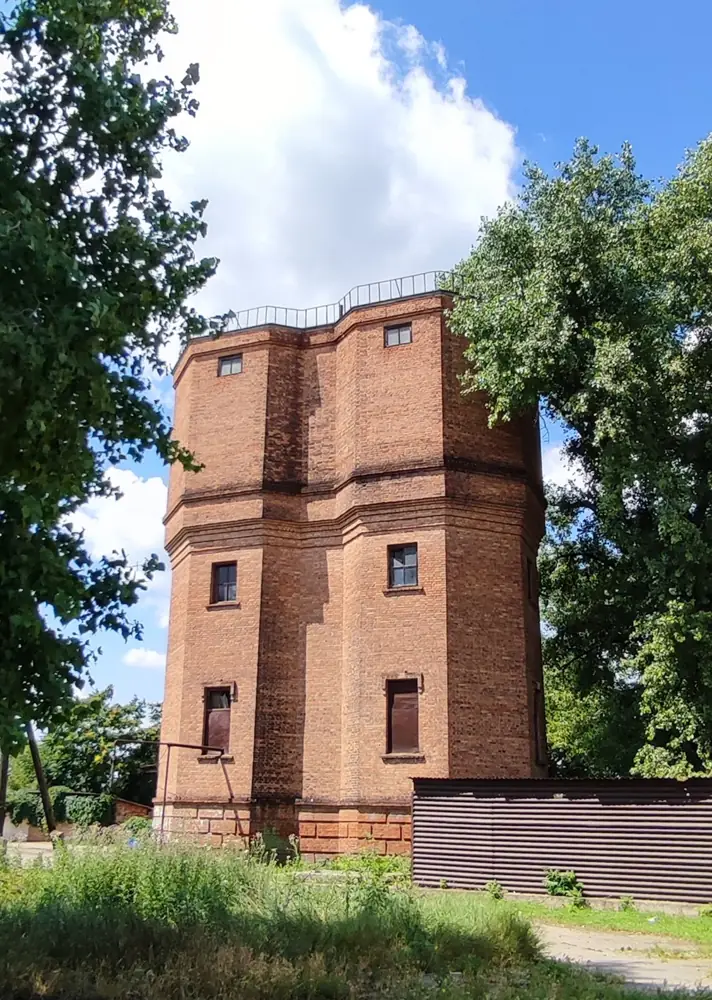
Історія
У міському переліку щойно виявлених об’єктів зазначено спорудження 1874 року та відбудову 1946 року. Це інша споруда, ніж башта Другої Катерининської залізниці на Іванова, 2Б. Цю башту також ідентифіковано на Wikimedia Commons (знімки 2019 і 2023 років, ріг вул. Барикадної й Тополиної). [8, 9]
Архітектура й конструкція
Без обмірів невідомо, який відсоток кладки зберігся з 1874 року; історична датованість не дорівнює матеріальній автентичності.
Дослідницька програма
Потрібні фото й архівні плани 1870-х і 1946 року. Філософія — пам’ять раннього міського водопостачання, частково переписана відбудовою.
Водонапірна вежа біля Лаври
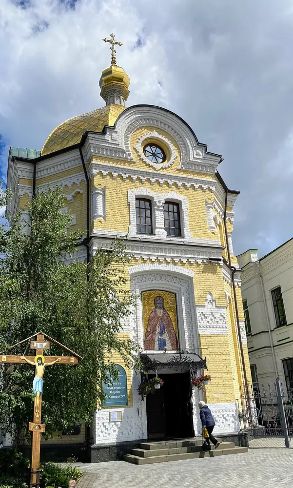
Історія
Реєстровий документ фіксує 1879 рік. Окремі сучасні фотографії 2026 року підтверджують ідентичність споруди за адресою Івана Мазепи, 23 (у підписах також Лаврська, 11). Обидва знімки на Wikimedia Commons із реєстровим ідентифікатором 80-382-0300 показують споруду, яка нині має вигляд каплиці з банею і мозаїкою; час і обставини цього пристосування потребують окремої перевірки. [10, 11]
Архітектура й конструкція
Потрібні обміри, аналіз плану й резервуара; близькість до Лаври підвищує вимоги до аналізу історичного середовища.
Дослідницька програма
Встановити початкову гідравлічну роль та авторство через фонди міського водогону. Філософія — технічний об’єкт у сакральному історичному ландшафті.
Цегляна башта станції Чорнорудка
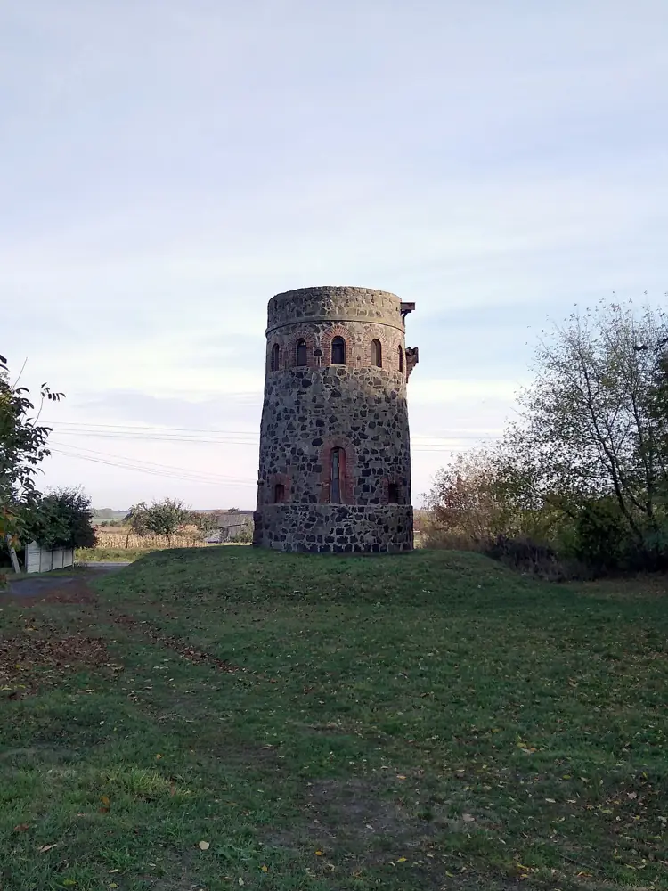
Історія
Вежа датована 1889 роком, нагадує замкову оборонну башту. Офіційний перелік фіксує її як пам’ятку місцевого значення; туристичні джерела пов’язують будівництво з маєтками Терещенків, але не наводять первинного договору. [12, 13]
Архітектура й конструкція
Цегляна архітектурна оболонка; невідомі тип бака, висота дна резервуара, режим подачі води для станції.
Дослідницька програма
Шукати архіви станції, цукрозаводу, землеволодіння. Філософія — індустріальна споруда, стилізована під середньовічну фортецю.
Башта станції Поташ
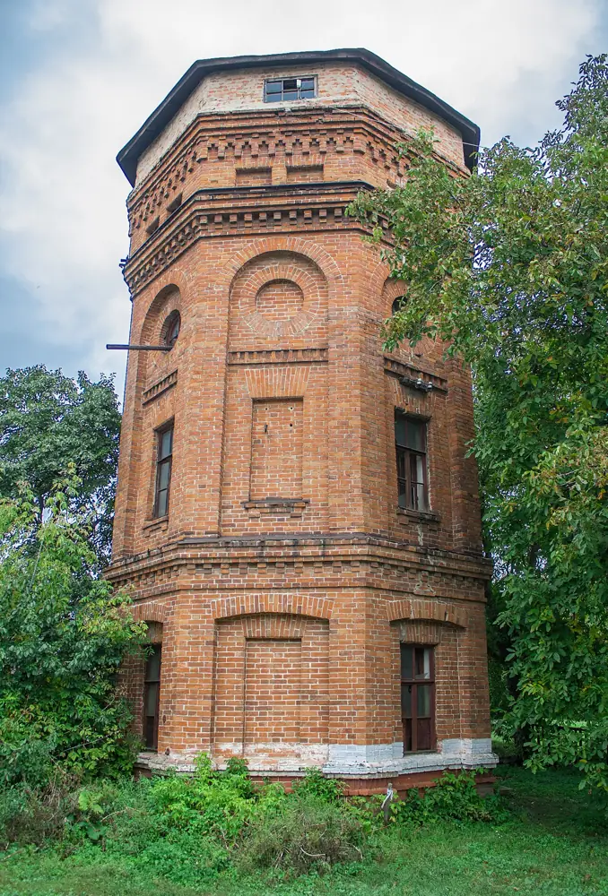
Історія
Башту датують 1891 роком. У 2025–2026 роках її охоронний статус був предметом судових та адміністративних процедур. Фото 2021 року на Commons підтверджує об’єкт і дату фіксації. [14, 15]
Архітектура й конструкція
Мурована станційна споруда; потрібно дослідити ступінь збереженості резервуара, перекриттів і сходів.
Дослідницька програма
Відокремити рішення суду про оформлення документації від фактичного внесення до Реєстру. Філософія — культурна цінність, яка стає видимою через конфлікт про охорону.
Вежа Стрийського парку
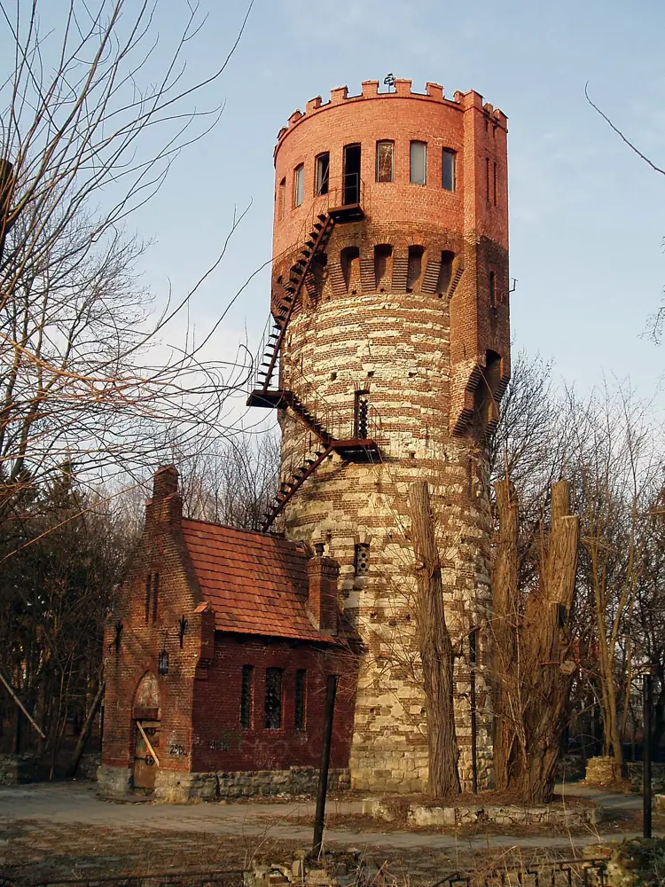
Історія
В офіційному переліку — осінь 1893 року; у джерелах Крайової виставки — 1894 рік. У 1976 році вежу пристосували під кафе-ресторан «Вежа». [16, 17]
Архітектура й конструкція
Висота близько 18 м, історичний резервуар 60 м³. Потрібно виявити, що збереглося від первісного водогінного обладнання.
Дослідницька програма
Дати 1893 і 1894 не усереднювати: перевірити акти завершення та відкриття виставки. Філософія — технічна споруда, маскована під романтичну фортифікацію.
Водонапірна вежа Житомира
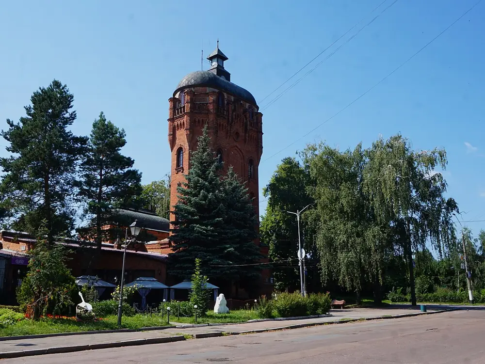
Історія
Державний архів фіксує проєкт і кошторис 1894 року, закладання фундаменту 1895 року, акт прийняття 1897 року та доповідь про завершення 1898 року. Міський туристичний ресурс наводить відкриття 27 грудня 1898 року. [18, 19]
Архітектура й конструкція
Висота 31 м, два резервуари по 100 м³; вежа поєднувала регулювання води та спостережну функцію. Припинення водогінного використання — близько 1965 року.
Дослідницька програма
Пояснити розбіжність реєстрових 1898–1899 і архівних 1897–1898. Філософія — інженерна вертикаль, що стала міським символом.
Вежа «Білий басейн»

Історія
Вежа датована 1898 роком у реєстрових джерелах; на Wikimedia Commons ідентифікована за адресою вул. Руська, 77-а (фото 2016). Через окупацію з 2014 року поточний стан і режим доступу не підтверджено. [20, 21]
Архітектура й конструкція
Мурована інженерна споруда з виразною пластикою; необхідні обміри резервуара й аналіз стану кладки.
Дослідницька програма
Віднайти первісні креслення, водогінні плани та старі фото. Філософія — резервуар як архітектурний образ і частина міської топоніміки.
Фахова стаття 2017 року, на яку посилався атлас, видана установою на окупованій території; у цій редакції її не використано. Датування спирається на український перелік пам’яток АР Крим.
Башта Другої Катерининської залізниці

Історія
Реєстр наводить 1895 рік, тоді як міський перелік щойно виявлених об’єктів згадує 1904 рік. Станцію Олександрівськ-II відкрито 1904 року; дата станції не доводить дату башти. [22, 23]
Архітектура й конструкція
Залізнична башта; у медіа описано післявоєнне невикористання й руйнування. Потрібно розрізнити втрачені й автентичні елементи.
Дослідницька програма
Перевірити плани залізниці та наказ 2022 року. Філософія — інженерний об’єкт на межі приватизації й суспільного інтересу.
Сталева сітка Шухова: гіперболоїдні башти
Гіперболоїдна сітчаста оболонка Володимира Шухова (1853–1939) — перша в світі конструкція такого типу (1896). В Україні збереглася група башт 1907–1934 років: Миколаїв, Черкаси, Конотоп, Біла Церква, Часів Яр, Помічна, Шостка, Пісківка. Авторство тут розподіляється між конструктором, гідравліком, замовником і заводом.
Шуховська башта Миколаєва
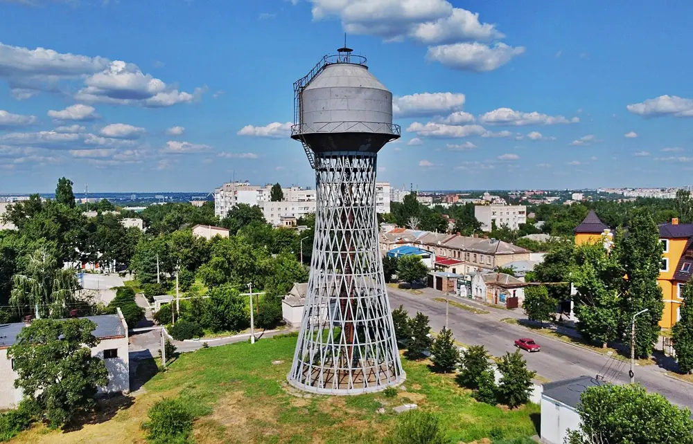
Історія
Питання про будівництво вежі міська громада порушила в липні 1904 року. 1906 року розпочато кам’яний фундамент і буріння свердловин; монтаж гіперболоїдної конструкції завершено в січні 1907 року, 15 березня 1907 року башту підключено до міської мережі. 1944 року її підірвали під час відступу німецьких військ; після війни відновили й використовували до 1958 року. [24, 25, 26, 27]
Архітектура й конструкція
Сітчаста сталева гіперболоїдна башта заввишки близько 32 м із резервуаром типу Інтце. Довідкові джерела згадують сприяння промисловця Іоакима Канегіссера (рівень C). Потрібно дослідити корозію, вузли перетину стрижнів, анкерування й фундамент.
Дослідницька програма
Відрізнити авторство гідравлічної системи й конструкції; архівно перевірити етапи післявоєнного відновлення. Філософія — математика прямого стрижня, що породжує криволінійну форму.
Гіперболоїдна вежа Черкас
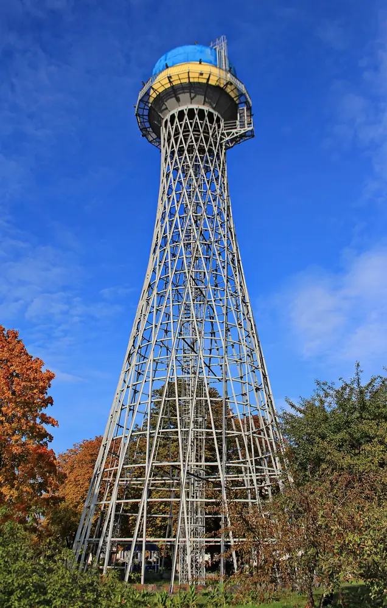
Історія
Будівництво водогону розпочато 16 серпня 1913 року; у 1914 році споруджено башту і мережу. Під час Другої світової війни споруду пошкодили, після війни відновили; експлуатація тривала до 1975 року за місцевими джерелами. За довідковими даними, під час відбудови 1949 року частину заклепкових з’єднань замінили зварними; планується реставрація. [28, 29, 30]
Архітектура й конструкція
Гіперболоїдна решітка; резервуар був на висоті приблизно 35 м. Історичні відомості про об’єм потребують переведення старих одиниць і перевірки.
Дослідницька програма
Отримати креслення і акт післявоєнної реконструкції; не переносити історичний стан на 2026 рік. Філософія — інженерія як громадська домінанта.
Гіперболоїдна башта Шостки
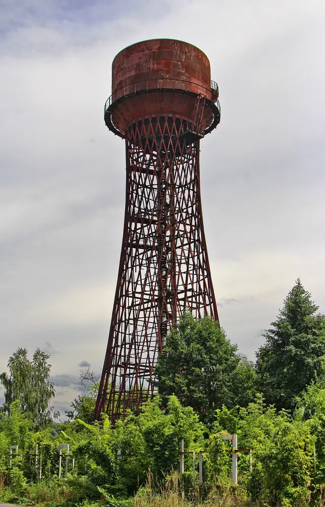
Історія
Енциклопедичні відомості відносять споруду до 1910-х років. Місцеве дослідження 2019 року посилається на цеховий паспорт із введенням в експлуатацію близько 1929 року. Атлас від 17.11.2026 вважав фото відсутнім; у цій редакції знайдено предметно атрибутовану серію Wikimedia Commons (2020). [31, 32]
Архітектура й конструкція
Для датування потрібні клейма металу, конструктивні стики, паспорт обладнання та креслення.
Дослідницька програма
Не обирати довільно одну дату: суперечність є предметом дослідження. Філософія — індустріальна пам’ять, що залежить від точності архіву.
Шуховська вежа Часового Яру
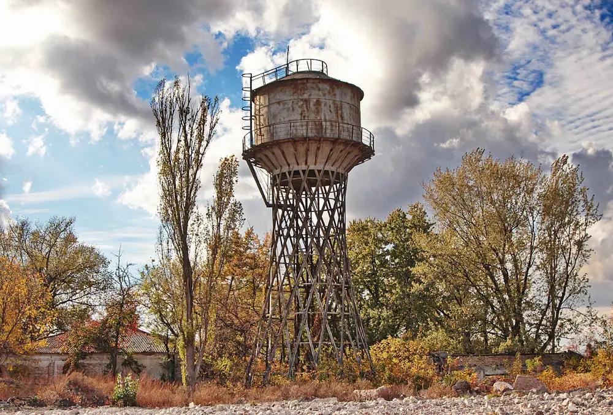
Історія
Споруджена 1927–1928 років для заводу й житлового району. 2019 року включена до переліку щойно виявлених об’єктів; в умовах війни фізичний стан не можна вважати перевіреним. [33, 34]
Архітектура й конструкція
Металева решітчаста башта; без доступу не можна оцінювати фактичні деформації чи ступінь руйнування.
Дослідницька програма
Першочергово зберігати довоєнні фото, відео, креслення та 3D-дані. Філософія — цифрова пам’ять як форма охорони, коли фізичний доступ неможливий.
Шуховська вежа Конотопа
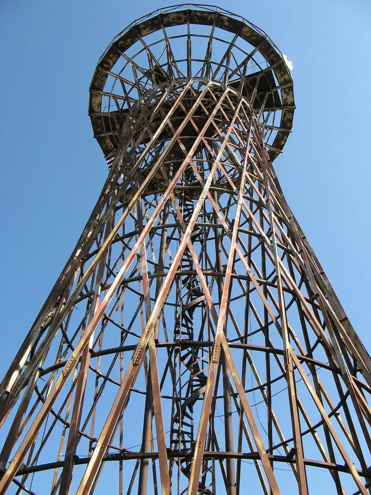
Історія
Міський музей зберігає фотографію будівельників 1928 року. Вежа споруджена 1928–1929 років. Під час війни пошкоджена; резервуар демонтовано 1980 року; пізніше використовували для телекомунікацій. [35, 36]
Архітектура й конструкція
Однопорожнинний гіперболоїд із 25 парами металевих кутових стрижнів, основа діаметром 16 м за міським описом. Бак не збережений.
Дослідницька програма
Порівняти світлину 1928 року з сучасним станом і кресленнями; оцінити наслідки втрати бака. Філософія — коли функція зникає, каркас залишається пам’яттю технології.
Шуховська вежа Білої Церкви
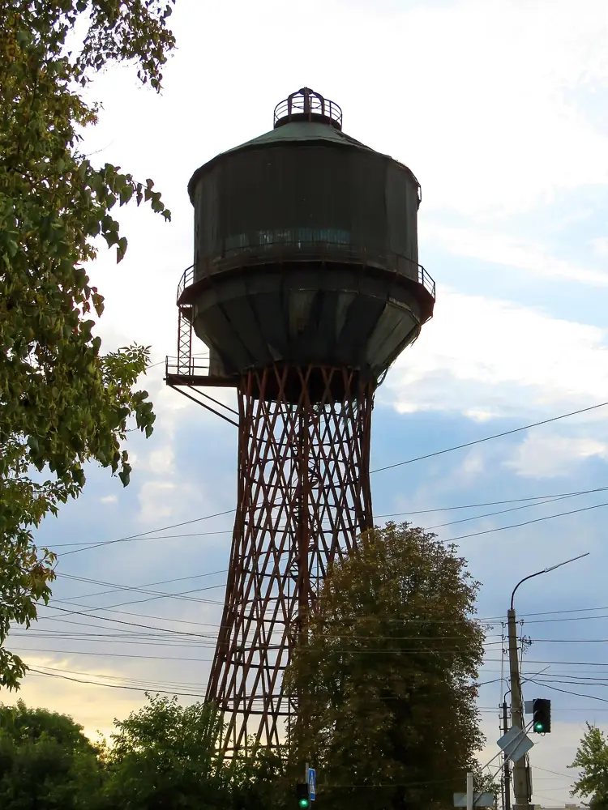
Історія
Вежу спорудили 1929 року; під час Другої світової війни пошкодили, відновили 1946 року. Міський інвестиційний портал розглядав туристичне пристосування. [37, 38]
Архітектура й конструкція
Висота орієнтовно 45–50 м за міським ресурсом; сталевий каркас і резервуар, конструктивні вузли потребують технічного паспорта.
Дослідницька програма
Перевірити чинний стан, дату останнього обстеження та правовий режим. Філософія — гідравлічна споруда як майбутній публічний простір без втрати інженерної автентичності.
Шуховська вежа Помічної

Історія
Наукова дисертація датує будівництво 1932–1934 роками. Вежа обслуговувала інфраструктуру залізничного вузла; точний початок експлуатації потребує архівної перевірки. [39, 40]
Архітектура й конструкція
Двоярусна конструкція, орієнтовна висота 20 м; у фаховому джерелі наведено два об’єми резервуарів 300 та 90 м³. Ці дані потрібно звірити з паспортом.
Дослідницька програма
Пошукати документацію Південної/Одеської залізниці, виробника металоконструкцій. Філософія — компактна просторова геометрія як символ залізничної модернізації.
Гіперболоїдна башта Пісківки

Історія
У Пісківці краєзнавчі матеріали документують дві різні башти: гіперболоїдну та старішу залізничну муровану. Їх не можна об’єднувати в один запис. [41, 42]
Архітектура й конструкція
Сталевий гіперболоїд; важливо обміряти кількість стрижнів, з’єднання й фундамент. Точне датування наразі не доведене.
Дослідницька програма
Знайти заводське клеймо, відомості станції, інвентаризацію залізниці. Філософія — промислова типологія, яку помилково легко втратити через плутанину об’єктів.
Модерн, ранній залізобетон і функціоналізм
Ранній залізобетон Кульпаркова (1905), міська «ратуша води» Артинова у Вінниці (1911–1912), глухівська вертикаль на місці фортечної брами (1927–1928), функціоналістичні вежі Вітольда Мінкевича у Львові (1932–1933) і закарпатська башта 1936 року.
Вежа Кульпарківської лікарні
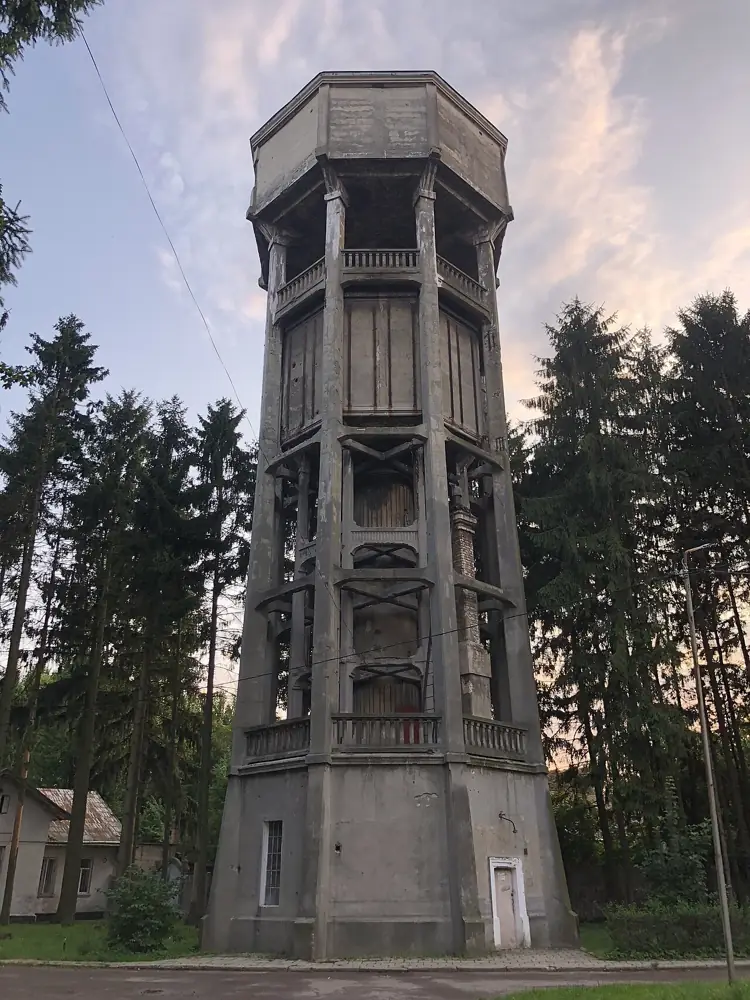
Історія
1905 року зведено залізобетонну вежу. Під час оновлення лікарні наприкінці 1920-х — на початку 1930-х років конструкцію переробили на двохрезервуарну, додали опори й сходи. [43, 44]
Архітектура й конструкція
Ранній дослід використання залізобетону. Необхідно перевірити проєктні перерізи, армування, корозію й вплив добудови 1930-х.
Дослідницька програма
Уточнити первісний креслярський комплект та реєстровий статус. Філософія — перехід від «архітектури оболонки» до відкритої логіки матеріалу.
Башта станції Кролевець
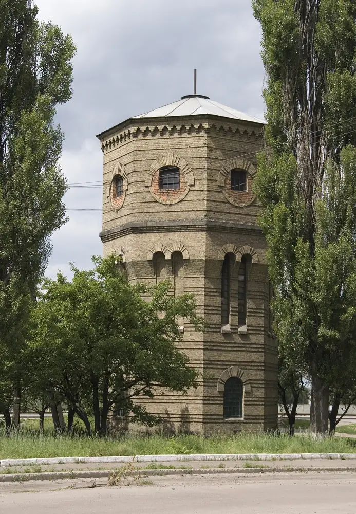
Історія
Башта включена до комплексу залізничної станції; реєстрове датування 1905 рік. Фотографія 2008 року в Commons підтверджує окрему ідентичність споруди. [45, 46]
Архітектура й конструкція
Залізнична башта для водопостачання локомотивів і господарства; об’єм і схема резервуара потребують обмірів.
Дослідницька програма
Знайти інвентарі станції та архівні плани колій. Філософія — інфраструктура, без якої не працювала епоха парової тяги.
Водонапірна башта Сімферополя
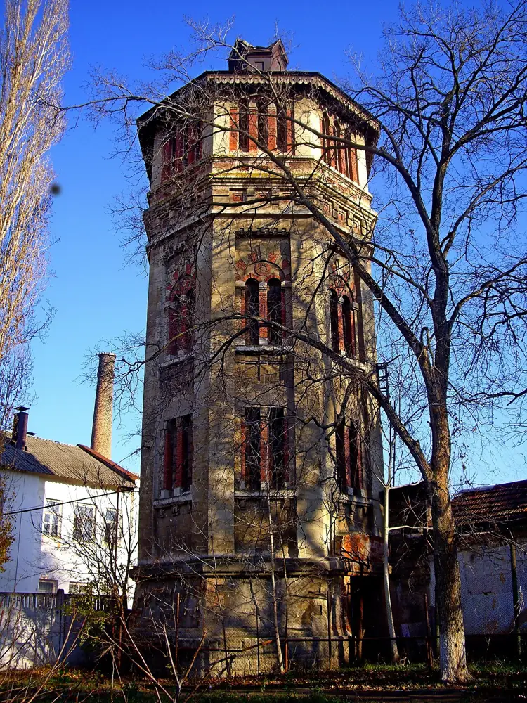
Історія
У перевіреному переліку пам’яток АР Крим зафіксована башта 1909 року. Через окупацію поточний стан, режим доступу та власність у цьому дослідженні не підтверджені. На Wikimedia Commons башта ідентифікована (фото 2013 року, вул. О. Невського, 27, територія лікарні). Один пізніший підпис датує її 1815 роком; це суперечить реєстровому 1909 року й потребує архівної перевірки. [20, 47]
Архітектура й конструкція
Для ідентифікації потрібні архівні плани, фотографії та порівняння адресних даних.
Дослідницька програма
Знайти довоєнне фото та архів міського водогону. Філософія — культурна спадщина, відділена від дослідника політичним кордоном і війною.
Вежа Артинова

Історія
Договір підряду укладено 1 грудня 1910 року; муровані стіни завершено 15 липня 1911 року, будівництво тривало близько 11 місяців. Джерела датують завершення 1911 або 1912 роком (довідники — 1912). Як водонапірна вежа діяла до 1920 року; у Другу світову — спостережний пункт, після війни — квартири працівників водоканалу. 17 лютого 1983 року взята на облік як пам’ятка місцевого значення; з 1985 року — музей (з 1993 — експозиція пам’яті учасників Афганської війни); з вересня 2024 року відкрито оглядовий майданчик. [48, 49, 50, 51]
Архітектура й конструкція
Семиярусна восьмигранна цегляна вежа з годинником; висоту джерела наводять по-різному (26–28 м у технічних довідниках). Поєднувала водонапірну, пожежну, годинникову й оглядову функції.
Дослідницька програма
Віднайти акти прийняття й договори підряду; розділити дату будівельної готовності та початку експлуатації. Філософія — міська ратуша, створена інженерною потребою.
Башта водогону Глухова

Історія
Проєкт міського водогону створено 1910 року; башту зведено у 1927–1928 роках (довідкові портали — 1927) на місці Путивльської брами Глухівської фортеці. Окремі краєзнавчі матеріали називають 1929 рік. На верхньому ярусі колись був міський годинник; влітку працює оглядовий майданчик. [52, 53, 54]
Архітектура й конструкція
Висота близько 40–41 м, до дна бака 36 м, місткість 360 м³ (за Національним заповідником «Глухів»). Круглий конічний стовбур переходить угорі у двоярусний циліндр із прямокутними вікнами; усередині — гвинтові сходи на 186 сходинок.
Дослідницька програма
Звірити дату приймання 1928/1929 та роль Розанова. Філософія — башта як годинник міста, інфраструктура і символ самоврядування.
Вежа Нового Львова

Історія
Проєктування та будівництво тривало у 1932–1933 роках; Енциклопедія сучасної України подає ширший інтервал 1934–1937 для двох веж Мінкевича, що потребує звірки. Вежа стоїть поблизу парку «Залізна вода». [55, 56]
Архітектура й конструкція
Дванадцятигранна цегляна форма, залізобетонні елементи, сходи й оглядовий майданчик. Інженерні розрахунки пов’язані з Адамом Куриллом.
Дослідницька програма
Перевірити первинні журнали «Architektura i Budownictwo» за 1934 рік і міські акти. Філософія — технічна споруда, що від початку включала громадський оглядовий сценарій.
Вежа Майорівки
Історія
Споруджена як пара до вежі на Тернопільській. Дослідження 2025 року фіксує історичні знімки 1960 року та сучасну фотодокументацію 2025 року. У 1990-х згадують ресторан. [57]
Архітектура й конструкція
Дванадцятигранна форма й оглядовий майданчик; позначка 380 м у джерелах означає абсолютну висоту над рівнем моря, а не висоту самої вежі.
Дослідницька програма
Звірити дату завершення за міським архівом; визначити фактичний стан 2026 року. Філософія — башта як перехід між гідравлікою, міським горизонтом і туризмом.
Водонапірна башта Великої Бакти
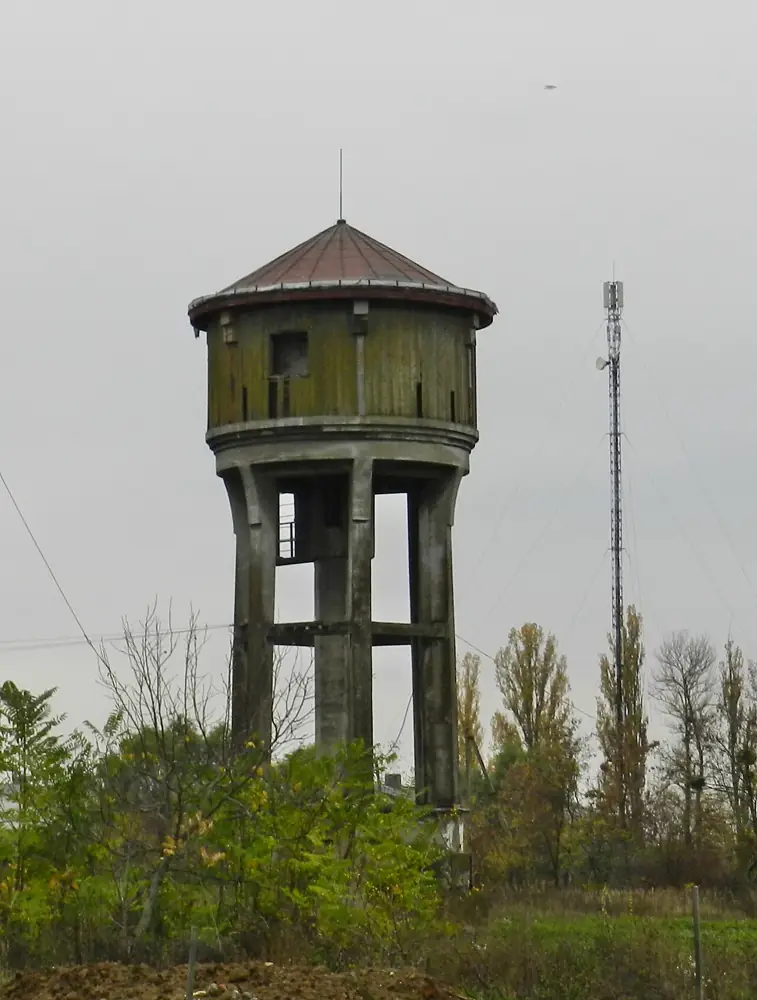
Історія
Наукова публікація 2025 року описує башту 1936 року як непрацюючу; дерев’яна обшивка пошкоджена, залізобетонна конструкція збереглася за даними авторів. На Wikimedia Commons є фото 2012 року з підписом «Водонапірна башта, 1936 р.». [58, 59]
Архітектура й конструкція
Важливий ранній приклад поєднання залізобетонної опори та дерев’яних елементів; потрібні обміри й дослідження корозії арматури.
Дослідницька програма
Провести фотограмметрію й архівний пошук чехословацького періоду. Філософія — периферійна інженерія як частина центральноєвропейської модернізації.
Башти без точної дати: залізниці, садиби, курорти
Станційні, садибні й курортні башти, що мають реєстровий статус, але не мають документально встановленої дати чи автора. Саме тут найбільше роботи для архівних і польових досліджень.
Залізнична башта Пісківки
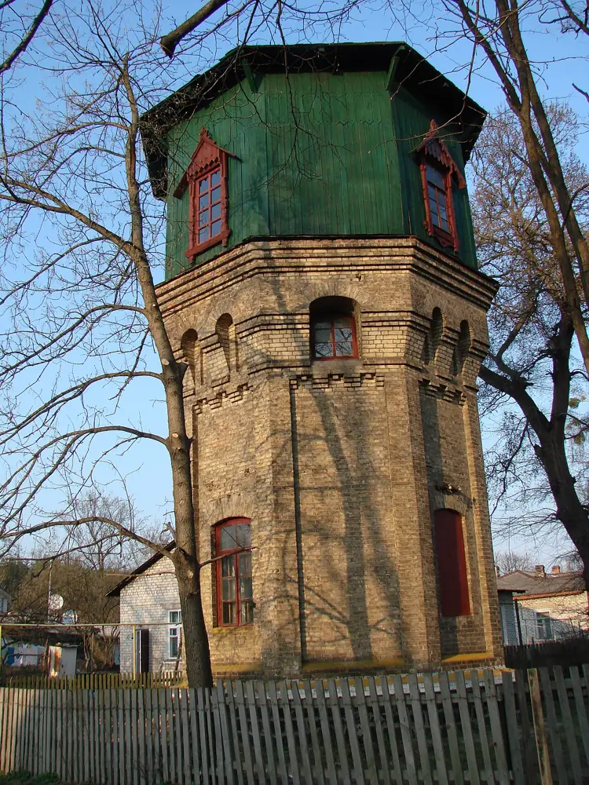
Історія
Окрема споруда від гіперболоїдної башти; описана в краєзнавчому огляді «Пісківка. Дві башти». Точний рік спорудження та реконструкції не встановлено. [41, 60]
Архітектура й конструкція
Потрібно визначити конструкцію бака, стан кладки та зв’язок із паровозним водопостачанням.
Дослідницька програма
Польова фіксація обох об’єктів і геоприв’язка мають бути незалежними. Філософія — дві інженерні епохи в одному поселенні.
Башта станції Великий Бурлук
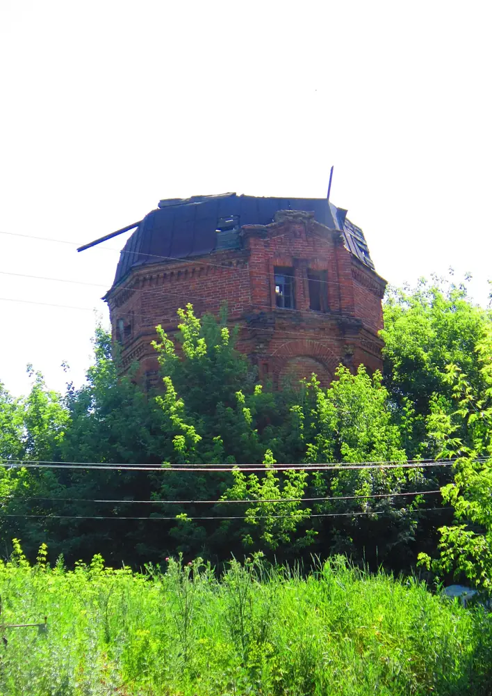
Історія
Башта є частиною історичного залізничного комплексу. Фотографії експедиції 15 червня 2019 року точно локалізують споруду на Привокзальній площі. [61, 62]
Архітектура й конструкція
Важливо вивчити цегляний стовбур, залишки бака й обвідних труб, стан фундаментів.
Дослідницька програма
Шукати креслення станції, визначити дату зведення. Філософія — звичайна станційна архітектура як історія повсякденної логістики.
Водонапірна башта Ковеля

Історія
У переліку пам’яток зафіксовано датування XX століттям. Wikimedia Commons містить фото 2012, 2016 і 2026 років з однаковою ідентифікацією пам’ятки. [63, 64]
Архітектура й конструкція
За фотографіями можливо розпочати морфологічний аналіз, але матеріали і стан не слід оцінювати без обстеження.
Дослідницька програма
Встановити рік за залізничними інвентарями; порівняти знімки 2012–2026. Філософія — міська пам’ять, яку можна відновити через серійний фотомоніторинг.
Водонапірна башта Умані

Історія
Медіа у вересні 2026 року повідомляли про вимогу виготовити облікову документацію та забезпечити державний захист. Існування споруди у переліку щойно виявлених об’єктів відносять до 2010 року. Атлас подавав адресу як невідому; фото 2016 року на Wikimedia Commons з охоронним ідентифікатором дає точну прив’язку: вул. Європейська, 29. [65, 66]
Архітектура й конструкція
Немає перевірених у цьому дослідженні креслень, технічного паспорта та вимірів.
Дослідницька програма
Отримати точну адресу, рішення 2010 року й архівне фото. Філософія — невизначеність як чесна категорія наукового каталогу.
Водогінна вежа садиби Терещенків
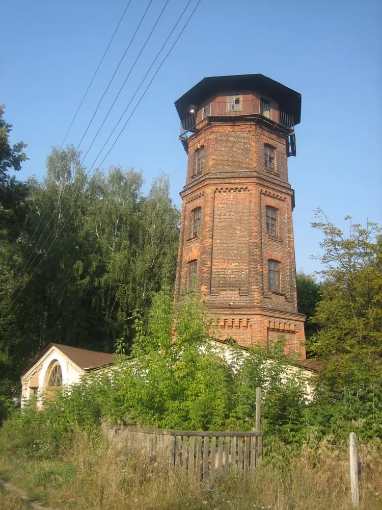
Історія
Вежа збереглася в комплексі господарських будівель маєтку, з прибудованими каретними приміщеннями та погребом. Фотодокументація 2008 року й пізніші серії дають можливість аналізу змін. [67, 68]
Архітектура й конструкція
Садибна інженерна система, де технічна функція інтегрована в господарський ансамбль.
Дослідницька програма
Шукати плани садиби, страхові описи, документи про водопостачання. Філософія — технологічна модернізація приватного маєтку як частина культурного ландшафту.
Водонапірна башта Євпаторії
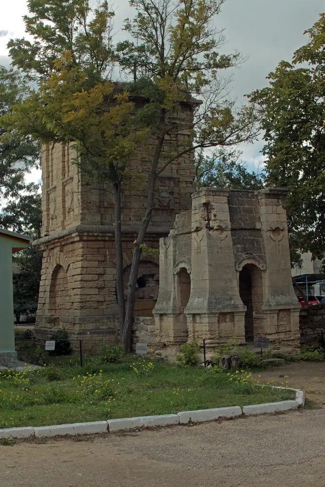
Історія
Український перелік фіксує об’єкт початку XX століття. Фотографія 2013 року з Commons точно ідентифікує адресу Київська, 43. [20, 69]
Архітектура й конструкція
Незвична водонапірна композиція; потребує обмірів і перевірки схеми резервуарів.
Дослідницька програма
Шукати архіви водогону Євпаторії. Філософія — технічний ландмарк курортного міста, чия історія не повинна зникати з українського наукового поля.
Повоєнна доба: відбудова і стандарт
Повоєнна відбудова водопостачання: сільська башта 1949 року, вежа ВДНГ (відкриття виставки — 6 липня 1958 року) і університетська вежа Голосієва (1955).
Водонапірна башта Пісків-Радьківських
Історія
Реєстровий перелік датує об’єкт 1949 роком. У перевіреній вибірці не встановлено надійної фотографії, однозначно прив’язаної до цієї конкретної башти. [61]
Архітектура й конструкція
Потрібні матеріал, висота, конструкція резервуара та функціональна історія.
Дослідницька програма
Польова фотофіксація за можливості; пошук у фондах громади. Філософія — повоєнна відбудова водопостачання як соціальна історія.
Водонапірна вежа ВДНГ

Історія
Вежа споруджена в період формування комплексу ВДНГ, відкритого 6 липня 1958 року. Міський туристичний портал повідомляє про пошкодження даху після пожежі й замурований вхід. На Wikimedia Commons є серія знімків 2020–2025 років, зокрема фото пошкодженого даху (2020) та інтер’єру. [70, 71]
Архітектура й конструкція
Циліндричний цегляний триярусний стовбур близько 30 м, бетонні внутрішні сходи; необхідне інструментальне обстеження.
Дослідницька програма
Отримати креслення «Київпроєкту», датування пожежі та акти стану. Філософія — невидима технічна основа публічної архітектури виставки.
Вежа Голосіївської академії

Історія
За Мапою реновації вежу збудовано 1955 року при модернізації водогону академії. Вона фігурує у справах щодо охоронного договору та загроз забудови. [72, 73]
Архітектура й конструкція
Висота близько 30 м за медіа; об’єкт на високій точці Голосіївського лісу. Немає підтвердженого технічного висновку.
Дослідницька програма
Отримати проєкт 1955 року й охоронний договір. Філософія — інженерна споруда як елемент університетського ландшафту й міської екологічної пам’яті.
Нові об’єкти цієї редакції: кандидати і втрати
Об’єкти, виявлені під час підготовки цієї редакції: дві башти Кременчука з ідентифікаторами пам’яток і втрачена у 2024 році вежа Ізмаїла.
Водонапірна башта № 1, Кременчук

Історія
Одна з двох башт Кременчука, що мають статус пам’ятки. Міська забудова Кременчука майже повністю загинула в Другу світову війну, тож збережена довоєнна інженерна споруда має особливу цінність. Серія фото 2018–2025 років на Commons дає змогу стежити за станом. [74, 75]
Архітектура й конструкція
Мурована башта; конструкція бака, висота й історія перебудов потребують обмірів та архівного пошуку.
Дослідницька програма
Встановити рік спорудження за фондами міського водоканалу та реєстровою облікою. Філософія — вертикаль, що пережила знищення міста.
Водонапірна башта № 2 біля вокзалу, Кременчук

Історія
Станційна водонапірна башта в історичному залізничному вузлі. Фотофіксація 2018–2019 років на Commons. Краєзнавчий сайт «Околиці Кременчука» показує, як легко помилитися з атрибуцією: знімок руїн 1943 року, який вважали руїнами цієї башти, виявився фото з Балтії. [76, 77, 78]
Архітектура й конструкція
Мурована залізнична башта; потрібно встановити тип резервуара та зв’язок із паровозним водопостачанням.
Дослідницька програма
Шукати плани станції Кременчук і інвентарі залізниці. Філософія — атрибуція фото як частина наукової доброчесності.
Водогінна вежа на площі Миру, Ізмаїл (втрачена)
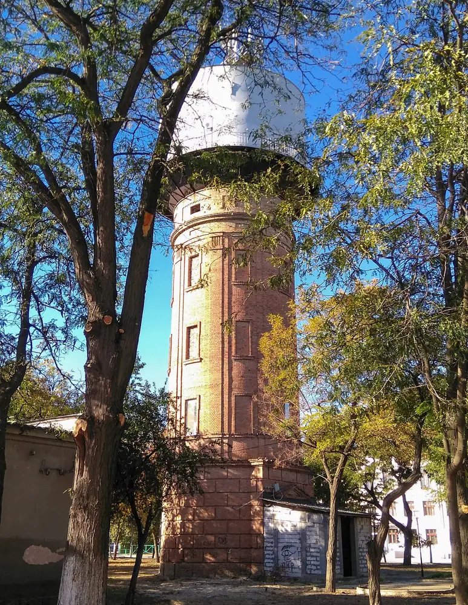
Історія
Вежа зафіксована на фото 2018 року. Підпис на Wikimedia Commons повідомляє, що її знесли у 2024 році. Це рівень C: дату й обставини знесення потрібно підтвердити документами міської ради. [79, 80]
Архітектура й конструкція
Через втрату об’єкта його можна вивчати лише за фото, кресленнями й свідченнями.
Дослідницька програма
Зібрати фото, креслення й рішення про знесення; створити цифрову реконструкцію. Філософія — каталог як остання форма існування втраченої башти.
Башта, що веде цю розповідь
Пілотна локація International Museum of Water Towers.
Водонапірна башта Малої Вільшанки

Історія
Об’єкт є пілотною локацією концепції International Museum of Water Towers. За попередніми обмірами власника висота близько 15 м, зовнішній діаметр близько 5 м, внутрішній близько 4 м. [81]
Архітектура й конструкція
Чотири рівні; геометрія та стан кладки мають бути підтверджені професійними обмірами й технічним обстеженням перед проєктуванням музейного пристосування.
Дослідницька програма
Знайти інвентарні описи та первісні креслення, встановити історичну функцію, перевірити право на землю й охоронний статус. Філософія — одна локальна башта як початок міжнародної мережі збереження.
Авторство, дати і чесність каталогу
1. Авторство — багаторівнева система
Львів, Стрийський парк: ескіз Юліана Захаревича, проєкт Міхала Лужецького, будівничі Юзеф Балабан і Влодзімєж Подгорецький. Кульпарків: Альфред Захаревич, а не автоматично інші члени родини Захаревичів. Тернопільська і Пасічна: Вітольд Мінкевич — архітектор, Адам Курилло — інженерні розрахунки. Миколаїв: Володимир Шухов — конструкція, Віктор Вебер — рання концепція водогону. Київ: Олександр Шіле — башти, Аманд Струве — загальний водогін.
2. Дати багатовимірні
Житомир: архівні 1894/1895/1897/1898 уточнюють реєстрове «1898–1899». Вінниця: договір 1910, кладка 1911, завершення 1911/1912. Львівські вежі Мінкевича: 1932–1933 у локальних документах і 1934–1937 в енциклопедичному огляді. Шостка: 1910-ті проти ≈1929. Запоріжжя: 1895 у реєстрі проти 1904 у міському переліку. Ці розбіжності не усереднено — вони є предметом подальшого дослідження.
3. Невідомий автор — не помилка
Для більшості залізничних і сільських башт автора не знайдено. Відсутність імені в наявних джерелах не означає, що проєкт був анонімним; це конкретне архівне завдання.
4. Відсутнє фото — теж результат
Для трьох башт (Майорівка, Піски-Радьківські, Мала Вільшанка) відкритого предметного фото немає. Позначка «фото в пошуку» — запрошення громадам і фотографам долучитися.
Чому водонапірна башта — це спадщина
Вертикаль і спільне благо. Водонапірна башта — архітектурна форма суспільного договору. Її піднесений резервуар робить видимою невидиму інфраструктуру: міську санітарію, пожежну безпеку, залізничний рух, промислове виробництво і побутову гідність.
Автентичність і нова функція. Після 1946 чи 2003 року відновлена споруда не перестає бути культурно значущою, але її матеріальна автентичність змінюється. Добросовісний музей пояснює, що саме збереглося, що відтворено і чому. Ревіталізація не повинна стирати конструктивну логіку заради ефектного інтер’єру.
Пам’ять і ризик. Часів Яр і Ізмаїл показують, що башту можна втратити — через війну або рішення про знесення. Фото, креслення, 3D-модель і точний каталог не замінюють пам’ятку, але зберігають знання про неї і можливість майбутньої реставрації.
Від пошуку до атласу: 12-місячний цикл
| Етап | Зміст робіт |
|---|---|
| 1–3 місяці · реєстр і авторство | Перегляд обласних реєстрів, наказів і списків щойно виявлених об’єктів; архівні запити щодо 20 пріоритетних башт; словник типів і стандарт ідентифікаторів. |
| 4–6 місяці · фотодокази | Для кожного об’єкта: фронтальний, діагональний, контекстний, інтер’єрний і детальний кадр; дата, автор, GPS, ліцензія; історичний і сучасний кадр з однієї точки. |
| 7–9 місяці · інженерна фіксація | Обміри, фотограмметрія, лазерне сканування вибірки, паспорти конструкцій, фіксація деформацій, корозії, тріщин і стану сходів. |
| 10–12 місяці · публікація | IMWT Ukraine Atlas з відкритими метаданими; 5 демонстраційних реставраційних кейсів; механізм подання невідомих башт громадами. |
Джерела і фотоархів
Нумерація — за порядком першої появи в досьє. Рівні: A — первинний, B — фаховий, C — довідковий. Перед передруком фото перевіряйте ліцензію й вимоги атрибуції на сторінці файлу.
1 Велика українська енциклопедія: Садиба в Качанівці vue.gov.ua/Садиба_в_Качанівці A
2 Wikimedia Commons: Качанівка. Водогінна вежа.jpg commons.wikimedia.org/wiki/File:%D0%9A%D0%B0%D1%87%D0%B0%D0%BD%D1%96%D… C
3 КНУБА: Музей води www.knuba.edu.ua/muzej-vody/ A
4 Цікаві місця Києва: Музей води. Kyiv Post (укр.). www.kyivpost.com/uk/post/21922 C
5 Kyiv Water Museum. Wikipedia. en.wikipedia.org/wiki/Kyiv_Water_Museum C
6 Wikimedia Commons: Музей води, Водонапірна башта.JPG commons.wikimedia.org/wiki/File:%D0%9C%D1%83%D0%B7%D0%B5%D0%B9_%D0%B2%… C
7 Wikimedia Commons: Украина, Киев - Водонапорная башня в Крещатицком парке 01.jpg commons.wikimedia.org/wiki/File:%D0%A3%D0%BA%D1%80%D0%B0%D0%B8%D0%BD%D… C
8 Запорізька міська рада: перелік щойно виявлених об’єктів datamzp.gov.ua/administrativni-ta-inshi-poslugi/pogodzhennya-rozmische… B
9 Wikimedia Commons: Запоріжжя, водогінна башта, вул. Барикадна.jpg commons.wikimedia.org/wiki/File:%D0%97%D0%B0%D0%BF%D0%BE%D1%80%D1%96%D… C
10 Мінкульт України: перелік пам’яток (PDF) mincult.gov.ua/wp-content/uploads/2026/07/perelik-pamyatok-m.-kyyiv-st… B
11 Wikimedia Commons: Водонапірна вежа, Київ 01.jpg commons.wikimedia.org/wiki/File:%D0%92%D0%BE%D0%B4%D0%BE%D0%BD%D0%B0%D… C
12 Travels.in.ua travels.in.ua/uk-UA/object/4312/vodonapirna-vezha B
13 Wikimedia Commons: Water tower in Chornorudka.jpg commons.wikimedia.org/wiki/File:Water_tower_in_Chornorudka.jpg C
14 Віче (Черкащина) viche.ck.ua/region/vodonapirnu-bashtu-1891-roku-na-umanshhyni-vnesut-d… B
15 Wikimedia Commons: Поташ (Маньківський р-н). Водонапірна башта.jpg commons.wikimedia.org/wiki/File:%D0%9F%D0%BE%D1%82%D0%B0%D1%88_(%D0%9C… C
16 Фотографії старого Львова photo-lviv.in.ua/8-rozkishnyh-lvivskyh-proektiv-mihala-luzhetskoho/ A
17 Wikimedia Commons: Вежа (стрийський парк).jpg commons.wikimedia.org/wiki/File:%D0%92%D0%B5%D0%B6%D0%B0_(%D1%81%D1%82… C
18 Державний архів Житомирської області zhytomyr.archives.gov.ua/?p=3259 B
19 Wikimedia Commons: Водонапірна вежа, 2023 рік.jpg commons.wikimedia.org/wiki/File:%D0%92%D0%BE%D0%B4%D0%BE%D0%BD%D0%B0%D… C
20 Перелік пам’яток культурної спадщини АР Крим (станом на 15.04.2024). Мінкульт України. mincult.gov.ua/wp-content/uploads/2024/04/ar_krym-stanom-na-15.04.24.p… A
21 Wikimedia Commons: Водонапорная башня «Белый бассейн».jpg commons.wikimedia.org/wiki/File:%D0%92%D0%BE%D0%B4%D0%BE%D0%BD%D0%B0%D… C
22 Мінкульт України: перелік пам’яток Запорізької обл. (PDF) mcsc.gov.ua/wp-content/uploads/2024/04/zaporizka_obl.stanom-na-15.04.2… B
23 Wikimedia Commons: Водонапірна башта Другої Катерининської залізниці.jpg commons.wikimedia.org/wiki/File:%D0%92%D0%BE%D0%B4%D0%BE%D0%BD%D0%B0%D… C
24 Історико-архітектурна спадщина старого Миколаєва (PDF) mykoodb.org.ua/wp-content/uploads/2019/03/Istoryko-arhitekturna-spadsh… A
25 Українська конкурентка Ейфелевій вежі. Телеграф. news.telegraf.com.ua/ukr/obshhestvo/5940673-ukrainska-konkurentka-eyfe… C
26 Водонапірна вежа інженера Шухова, Миколаїв. MoreInfo. moreinfo.ua/en/nikolaev/place/vodonapornaja_bashnja_inzhenera_shuhova C
27 Wikimedia Commons: Шуховська водонапірна башта Миколаїв.jpg commons.wikimedia.org/wiki/File:%D0%A8%D1%83%D1%85%D0%BE%D0%B2%D1%81%D… C
28 Історія Черкас: Башта Шухова history.cherkassy.ua/index.php/arkhitektura-mista/25-bashta-shukhova.h… B
29 Shukhov Tower, Cherkasy. Travels.in.ua. travelsinua-prod.azurewebsites.net/en-US/object/3227/shukhov-tower C
30 Wikimedia Commons: Гіперболоїдна вежа Шухова у Черкасах.jpg commons.wikimedia.org/wiki/File:%D0%93%D1%96%D0%BF%D0%B5%D1%80%D0%B1%D… C
31 СумДУ: тези конференції 2019 (PDF) csp.sumdu.edu.ua/docs/2019/tezy2019.pdf B
32 Wikimedia Commons: Водогінна вежа конструкції Володимира Шухова Шостка.jpg commons.wikimedia.org/wiki/File:%D0%92%D0%BE%D0%B4%D0%BE%D0%B3%D1%96%D… C
33 Український культурний фонд: реєстр заявок ucf.in.ua/m_programs/5f8048d50aa0bb6e4665c9b3/register?type=received_a… A
34 Wikimedia Commons: Водогінна вежа конструкції Володимира Шухова Часів Яр 1.jpg commons.wikimedia.org/wiki/File:%D0%92%D0%BE%D0%B4%D0%BE%D0%B3%D1%96%D… C
35 Конотопська міська рада: Золоті фонди музею konotop-rada.gov.ua/zoloti-fondy-muzeiu-10/ A
36 Wikimedia Commons: Shukhov tower (Konotop) (1).JPG commons.wikimedia.org/wiki/File:Shukhov_tower_(Konotop)_(1).JPG C
37 Біла Церква Invest: Водонапірна вежа Шухова www.bilatserkvainvest.com/vodonapirna-vezha-shuhova B
38 Wikimedia Commons: Bila cerkva shukhov tower.jpg commons.wikimedia.org/wiki/File:Bila_cerkva_shukhov_tower.jpg C
39 НУ «Львівська політехніка»: дисертація, 2017 (PDF) old.lpnu.ua/sites/default/files/dissertation/2017/5725/diss_smolenska.… B
40 Wikimedia Commons: Гіперболоїдна вежа Помічна.jpg commons.wikimedia.org/wiki/File:%D0%93%D1%96%D0%BF%D0%B5%D1%80%D0%B1%D… C
41 Україна Інкогніта ukrainaincognita.com/kyivska-oblast/borodyanskyi-raion/piskivka/piskiv… B
42 Wikimedia Commons: Пісківка водогінна вежа Шухова (1).jpg commons.wikimedia.org/wiki/File:%D0%9F%D1%96%D1%81%D0%BA%D1%96%D0%B2%D… C
43 Фотографії старого Львова photo-lviv.in.ua/vodonapirna-vezha-na-kulparkovi/ B
44 Wikimedia Commons: Kulparkiv Water Tower.jpg commons.wikimedia.org/wiki/File:Kulparkiv_Water_Tower.jpg C
45 Мінкульт України: перелік пам’яток (PDF) mincult.gov.ua/wp-content/uploads/2026/06/sumska-oblast_-stanom-na-23.… B
46 Wikimedia Commons: Water tower at Krolevets Railway Station.jpg commons.wikimedia.org/wiki/File:Water_tower_at_Krolevets_Railway_Stati… C
47 Wikimedia Commons: Симферополь водонапорная башня.JPG commons.wikimedia.org/wiki/File:%D0%A1%D0%B8%D0%BC%D1%84%D0%B5%D1%80%D… C
48 ВНТУ: публікація 2017 (PDF) pdf.lib.vntu.edu.ua/books/2024/vntu_2017_netpub.pdf B
49 Vinnytsia water tower. Wikipedia. en.wikipedia.org/wiki/Vinnytsia_water_tower C
50 Vinnytsia Water Tower. Structurae. structurae.net/en/structures/vinnytsia-water-tower C
51 Wikimedia Commons: Vinnytsia - Water tower.jpg commons.wikimedia.org/wiki/File:Vinnytsia_-_Water_tower.jpg C
52 Національний заповідник «Глухів»: Башта водогону nz-hlukhiv.com.ua/pamyatki-arhitekturi-mistsevogo-znachennya/bashta-vo… A
53 Water Tower, Hlukhiv. Travels.in.ua. travelsinua-prod.azurewebsites.net/en-US/object/1153/water-tower C
54 Wikimedia Commons: Водонапірна башта, Глухів.JPG commons.wikimedia.org/wiki/File:%D0%92%D0%BE%D0%B4%D0%BE%D0%BD%D0%B0%D… C
55 Фотографії старого Львова photo-lviv.in.ua/vodonapirna-vezha-na-ternopilskij-mynule-ta-sohodenny… B
56 Wikimedia Commons: Водонапірна вежа * Львів Тернопільська 24А * 1.jpg commons.wikimedia.org/wiki/File:%D0%92%D0%BE%D0%B4%D0%BE%D0%BD%D0%B0%D… C
57 Фотографії старого Львова photo-lviv.in.ua/scho-sproektuvav-rektora-lvivskoji-politehniky-vitold… B
58 КНУБА: збірник наукових праць, 2025 library.knuba.edu.ua/books/zbirniki/29/2025/SD2514.pdf B
59 Wikimedia Commons: Водонапірна башта, 1936 р. .jpg commons.wikimedia.org/wiki/File:%D0%92%D0%BE%D0%B4%D0%BE%D0%BD%D0%B0%D… C
60 Wikimedia Commons: Водонапірна башта ст.Пісківка.JPG commons.wikimedia.org/wiki/File:%D0%92%D0%BE%D0%B4%D0%BE%D0%BD%D0%B0%D… C
61 Мінкульт України: перелік пам’яток (PDF) mincult.gov.ua/wp-content/uploads/2026/05/harkivska-oblast_stanom-na-2… B
62 Wikimedia Commons: Burluk Railway Station Water Tower by Venzz 01.jpg commons.wikimedia.org/wiki/File:Burluk_Railway_Station_Water_Tower_by_… C
63 Мінкульт України: перелік пам’яток (PDF) mincult.gov.ua/wp-content/uploads/2024/04/295-vid-19.04.2024.pdf B
64 Wikimedia Commons: Водонапірна башта, Ковель.jpg commons.wikimedia.org/wiki/File:%D0%92%D0%BE%D0%B4%D0%BE%D0%BD%D0%B0%D… C
65 Громадське Умані hromadske-uman.com/?p=18867 B
66 Wikimedia Commons: Водонапірна башта (Європейська, 29) P1260928.jpg commons.wikimedia.org/wiki/File:%D0%92%D0%BE%D0%B4%D0%BE%D0%BD%D0%B0%D… C
67 Україна Інкогніта ukrainaincognita.com/mista/shpytky-zalyshky-maietku-tereshchenkiv-vodo… B
68 Wikimedia Commons: Водонапірна-башта-Терещенка-загальний-вигляд.JPG commons.wikimedia.org/wiki/File:%D0%92%D0%BE%D0%B4%D0%BE%D0%BD%D0%B0%D… C
69 Wikimedia Commons: 0345-Water Tower 1.jpg commons.wikimedia.org/wiki/File:0345-Water_Tower_1.jpg C
70 Київ: міський туристичний портал guide.kyivcity.gov.ua/places/vodonapirna-vezha-na-vdnh B
71 Wikimedia Commons: Водонапірна вежа, Київ. Проспект Академіка Глушкова 01.jpg commons.wikimedia.org/wiki/File:%D0%92%D0%BE%D0%B4%D0%BE%D0%BD%D0%B0%D… C
72 Мапа реновації renovationmap.org/building/1HvJ1/ B
73 Wikimedia Commons: Водонапорна башта, Глушкова Академіка просп., 1.JPG commons.wikimedia.org/wiki/File:%D0%92%D0%BE%D0%B4%D0%BE%D0%BD%D0%B0%D… C
74 Category: Water tower on Svobody Avenue, Kremenchuk. Wikimedia Commons. commons.wikimedia.org/wiki/Category:Water_tower_on_Svobody_Avenue,_Kre… C
75 Wikimedia Commons: Водонапірна башта № 1, квітень 2025.jpg commons.wikimedia.org/wiki/File:%D0%92%D0%BE%D0%B4%D0%BE%D0%BD%D0%B0%D… C
76 Category: Water tower (Kremenchuk railway station). Wikimedia Commons. commons.wikimedia.org/wiki/Category:Water_tower_(Kremenchuk_railway_st… C
77 Руїни водонапірної башти, 1943 (уточнення атрибуції). Околиці Кременчука. okrain.net.ua/en/ruiny-vodonapornoj-bashni-1943-god-foto-622-en/ C
78 Wikimedia Commons: Water tower at Kremenchuk Railway Station (2019-07-21).jpg commons.wikimedia.org/wiki/File:Water_tower_at_Kremenchuk_Railway_Stat… C
79 Category: Myru Square Water Tower, Izmail. Wikimedia Commons. commons.wikimedia.org/wiki/Category:Myru_Square_Water_Tower,_Izmail C
80 Wikimedia Commons: Myru Square Water Tower, 2018.10.06.jpg commons.wikimedia.org/wiki/File:Myru_Square_Water_Tower,_2018.10.06.jp… C
81 IMWT imwt.space/ B